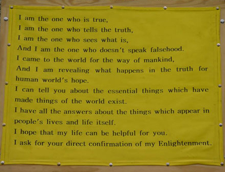

On Sunday 24th April 2000, from 12 to 4 in the afternoon, our party was in Speaker's Corner, Hyde Park. Our party put up Tathagata's message board that we prepared and wore tops on which was written "I love you. I have the answers about your life, about your happiness, and about all the help that you need during your life." "Miraculous medical science. The diseases which can be cured in another way. Where diseases occur and the level of pain can be perceived, if only seen. The diseases can be 100% cured without using any instruments or medicines."
Some people laughed at reading the top we were putting on which was written "I love you." Tathagata shouted out.
"I will stay in this world for 15 years from now, and I don't know how many people I can make contact with. The words I have which can give you hope is that things of the world have existed through problems for a long time. If you know a certain question has a certain answer, the fact will be very helpful for your life. The question you are given right now is to know which problem has which answer. Those who follow falsehood will be destroyed. I cannot wait for you in this place forever. I cannot do anything if you refuse to know the truth. If you yourself want the end, I cannot prevent it. First of all, you should confirm if what I say is true or not.
You don't have time to enjoy watching comedy or falsehood any more. Now, ask! If you have a curiosity to know a thing. I want you to confirm if I am the man who knows or not."
Person 1 : What is your point?
Tathagata : You will be destroyed in the future. The words that the end of world would come in this age are the story handed down through prophecy many times. I have made a lot of effort to prevent this. But I don’t have any specific method because people turn away from the Truth and follow falsehood. One certain thing is that there is a changing period after 17 years. A new world is born at that time. Whether you live or you meet a permanent end is dependent on your will. The world has existed for a long time through things in the problems. The important thing for you right now is to think whether you will live or die. There is the way to lead you to the end, or to endless life, in the problem which you don’t know. However, I have yet to meet somebody who wants to live, up to now. So I come to this place today as well. I flew 13 hours yesterday in order to be in this place. Now, I want you to ask why I am doing such a hard work.
Even though there have been many prophets in this world up to now, none could reveal the truth that people will experience in this age. That's why I have come to this age, and why I am in front of you in this age. You don’t have time to enjoy comedy and have no time to waste your life. I would like to say that you still have opportunity, and I hope you take the opportunity to open your eye to things of the world. That is the only way to prevent the end of the world. Now, any brave man who can abandon falsehood and listen to the Truth, stand up and ask. Then you will know I am different from others. I am waiting for your question.
One thing which is clear is that every answer is in the problem. But other people don’t know the problem. I want you to confirm this point in this place. And if you don’t want to live, please tell other people, for their benefit when you go back. ‘A person asked us in this place if we would live or die.’
Person 2 : How can accidents be prevented?
Tathagata : The only thing I can tell you is that a problem always has an answer. If you open your eye a little to the Truth, you yourself can prevent things like accidents.
Professional hecklers in speaker's corner, they claimed so, interrupted : What is the Truth?
Tathagata : It is easy for me to tell the Truth in this place, but if I tell the Truth you will go away. People have killed those who reveal the Truth in the world. I am trying to reveal Truth and am running the risk of being in danger. If there is one who really wants to save oneself I will tell the Truth in front of them. I will not answer if you are simply asking to slander and harm me.
Hacker 1 : Who killed the dinosaurs?
Tathagata : Because you do not try to learn the Truth and only try to play, I can not speak to others.
Hacker 1 : I don’t want to listen to bullshit.
Hacker 2 : What happened to the dinosaurs? Answer the question.
Tathagata : The word 'love' exists in you, but there is no one who teaches what 'love' is. The word 'happiness' exists in you, but there is no one who teaches how you can obtain happiness, and how you can share that happiness with others. Then who are those who shout out in the world to help others? It can be easily solved, if you see existent thing as a problem. Is there any one amongst you who really loves others? If you say 'yes', I will confirm it. Falsehood is the act of devils, you can never have love with falsehood.
Person 3 : How am I able to know the Truth?
Tathagata : It is possible if you learn a little. Initially people don’t know mathematics. People naturally begin to understand after starting to learn the numbers in school. When you come near to me, and meet 'what is', and listen to 'what is', you will come to open your eye to the Truth.
Can a blind person see this fist?
It is selfish if you try to see the Truth without learning about things of the world. Many people prophesied that a truthful man would come in this age. I am that truthful man. Only a truthful man can reveal what exists in the Truth.
Person 4 : Do you have religion?
Tathagata : I never had any religion and have a religion like you. I didn’t read books and learn like you. I pay all the expenses to come to this place. I sacrifice everything I have for you. Even if I die I will leave one thing clearly in the world. I refuse religions using my name, and I will tell everyone to learn the fact that problems make answers through the Truth. Learn through 'what is' in the Truth.
You may disregard me because I am in this place but I will tell you one thing clearly. ‘Is there any one in the world who can answer my three questions?'
I will question very common things. But no one in intellectuals will answer my questions. This is the difference between you, people in you, and I. What is the point teaching things that you don’t know to others.
Person 5 : Does God exist?
Tathagata : Gods have existed while mankind has existed. But Gods do not answer the problem that you want to know. Do you want to see truth or falsehood? If you want to see falsehood you will meet the end. It is the result of falsehood. If you want to see the Truth, you will see endless life. It is the answer that will be in you.
Person 6 : Could you tell me if I will be successful?
Tathagata : What do you want to do? Explain like a mathematical question.
Person 6 : I want to do art?
Tathagata : Are you a painter?
Person 6 : I am a musician.
Tathagata : Why do you think you have to do music?
Person 6 : To communicate with others.
Tathagata : What can you gain from doing music?
Person 6 : I can understand life and enjoy life.
Tathagata : How can you understand life?
Person 6 : Enjoying the music and I can put my ideas in the music.
Tathagata : Are you saying that you live for the music?
Person 6 : Listening to music and watching movies as well.
Tathagata : I am surprised after listening to what you said. You are living losing your life. If you live like that your soul will not even go to the hell. What’s a fool, who want to exchange their life for music. You asked a very important question today. But when you see me next, ask me why you have to live. Then I will give you the answer. If you don’t know clearly the reason why you should live it is a very unfortunate thing for yourself.
Person 7 : Most people live like that.
Tathagata : Most people are not interested in their life because this age is the end of the world. It is silly if you expect that dead sprits will do everything for you, when you yourself do nothing for you. In fact, there are many people who raise their voice in front of you cannot even say a lie if they don't put Gods up. An awful sin is to let yourself live in falsehood. And yet you refuse to know the Truth. You should consider this point when you go back.
What I ask of you is to save your life. If you consent, you will turn into an eminent person within 3 years. Furthermore, you will begin to practice big love through what you come to know to the world, you can change your life to endless life through this.
Person 7 : Doing meditation or doing what?
Tathagata : What I teach is 'What is'. It is the same as somebody who doesn’t know mathematics understand mathematical questions learning numbers, you come to open your eyes to 'what is' through learning 'what is'.
Person 7 : Can I learn by myself or do I need a teacher?
Tathagata : If you learn from me, such a problem can be solved easily. I never lie. But when people do not recognize 'what is', no matter how much they want, it is impossible to speak truthfully.
Person 8 : What is enlightenment?
Tathagata : To be enlightened means to open ones eyes to 'what is'. Obtaining perfect enlightenment like me is to be able to recognize 'what is' completely. When you come to recognize 'what is', you are able to get everything you want through 'what is'.
Person 9 : Osho Rajneesh and the Dalai Lama opened their eyes, but they don’t say to follow them.
Tathagata : I have visited Osho Rajneesh and the Dalai Lama. I called at their house and their secretaries let them know the fact that I was there, 5 or 10 times. But unfortunately they could not open the door. What do you think the reason was? It was because their falsehood would be revealed.
Person 9 : Does that mean they were afraid their falsehood would be revealed, because they don’t have truth?
Tathagata : That's correct. I can change your destiny. You feel blocked inside now. It means that you have a serious problem.
Person 9 : In what way?
Tathagata : God has entered you already. If you live in this state continuously, your life will be ruined. Because the god inside you will always try to deceive you, you have to live pursuing ideals. I can solve the problem immediately, if you learn the Truth and if you transfer the correct teaching to future generations for the world. I will not harm the god. If you refuse my suggestion, you cannot live for long. If you want I will change your destiny. If you want I can make you live as much as you want, and I can also make you be born as a prominent person endlessly. I can let you confirm whether such a thing is possible or not. I will show you the proof in front of scientists or doctors who have an excellent brain. Throughout my life I’ll never do such a thing that deceives others. I don’t get donations from others, and I do this work depending on my ability. If you get into a difficulty, I can give you the ability to solve it. What do you do now?
Person 9 : I am a student. I am always working for my life to be better and toward enlightenment. I think God is everywhere. But some people feel it, some people don’t feel it.
Tathagata : That is the problem that you have. You have to be apart from the God. If I kept company with God, I would travel with my own airplane and would have a comfortable life with many people around me. However, the reason that I don’t keep company with God is that the Gods that are in the world exist by wrong life. I am not the person who came to save dead gods, but I am the person who came to this world to save living humans. The only thing that I can do is to help them to come back to the world of life. Only when they are born in the world of life, there is a way to bless themselves.
How could I know that you have god? It is that I can see everything. I am the only person who can solve the problem you have. The knowledge that you can learn from university is very small. However, if you learn from me for a short time, you can learn very big things. The important thing is not others approval, but the ability that you have to have.
Person 10 : Are there a lot of gods, not only one God?
Tathagata : There are as many gods in the world as living people. If gods can help the world, then why is it that people don’t know things in the Truth.
Person 11 : Because people do not listen.
Tathagata : It isn’t correct. Gods that exist in the world cannot see the Truth.
Person 12 : If a god does not accept other gods, does it mean that gods have ego?
Tathagata : If you want to know about the world of God, visit me. Then I will tell you about everything which exists in the world of gods. This man who is here was a leading researcher in Volvo research center in Korea. But he recognized the importance of this work, so he resigned from his job and followed me. Think deeply on what I have told you. I never tell a lie. In fact, only 30% of patients are correctly diagnosed and treated in hospitals, even if they have modern equipment. But I can diagnosis 100% of any person’s disease. And if I want I can cure them 100%. In any case, if I hold the soul of a patient who is having an operation, the patient won’t die even if the operation goes wrong. This will be revealed one day.
Person 13 : Do you want people to follow you and learn to be like you?
Tathagata : It is a problem that such a person is very rare. But the situation is better than Gautama Buddha and Jesus Christ faced. Jesus Christ was killed cruelly by people for trying to reveal what is in the Truth. A person like Gautama Buddha died continuously wandering about human society in order to reveal the Truth. I am alive and came here by airplane. I never say to follow me. What I want is your life. What I want is for you to live happily as a wise person. And when an ever better person than me comes to the world, you can go to that person. I don’t prevent somebody who comes near to me, and I don’t hold somebody who leaves me. I want people to accept the importance of my teaching, but I don’t want people to follow and worship me.
An acquaintance came and asked to Tathagata with loud voice, "What is the truth?"
Tathagata answered "As a person who did not learn the Truth, even if I tell you the truth, will you be able to recognize it?"
The person asked to Tathagata playfully, "Can you teach me?"
Tathagata answered, "Then be ready to learn, and visit me. Then I will teach you the Truth. You will recognize the Truth if you learn for several days.
A hacker said "I'm not rich. I don't have money to give you. I am a poor man. Can you tell me here in this park."
Tathagata replied "Can you teach mathematics to someone who doesn’t even know numbers? Do you know mathematics?"
The hacker said "What is the relevance between my question and mathematics?"
Tathagata answered "The Truth is like mathematics. When you learn mathematics you learn from numbers. In the Truth answers are in the problems. Answers are in the questions in mathematics as well. If you can cause a person to understand mathematics when that person doesn’t know numbers, I will teach you the Truth so as to understand the Truth."
The hacker made noise carelessly. Then Tathagata asked the person the reason he lived. He didn’t answer the question and made noise continuously.
Then Tathagata said, “we call a psychopathic one who is noisy without knowing why oneself lives. Jesus Christ was born in Israel in order to make people realize. But psychopaths killed Jesus Christ. The important thing is that you have to prove your words, when you speak. Saying words at random is wrong. Is there anyone who can answer my question around you?”
People scattered. After for a while Tathagata shouted out again.
"There is a changing period within 20 years in this mankind. This changing period will make all civilization and substance disappear. The reason I am in front of you is to discover if you want to live or die. If you want to live, I will tell you the way you can live. Through this message I say “I am the one who is truthful, who tells the Truth, who doesn’t tell falsehood, and who sees 'what is'”. I can tell you the problems of every result that you want. What I want to tell you is the fact that your future is determined by the problems in you. Now, you have to think importantly what you want, and through which problem you can obtain what you want.
No one told such a thing until now to mankind. Why do you think I have to do such a hard work in front of you and to be in readiness to suffer all insults. It is to give hope to your life. What I want is for you to open your eye to reality. If you learn about the Truth a little, everybody can open their eye to reality. Things that are in reality will make divide you life and death.
The thing that can awaken you from darkness is confirming and learning 'what is'. I do not get anybody's help for this work. I never belonged to any religion since I was born, and I didn’t come to you to spread religion. What I want to tell you is to open your eye to the Truth. This will be the most valuable thing for you.
Why do you think I am here where comedy is performed? It is because everybody in this age refuses life. Even if you refuse the Truth, when you go back, please tell the people around you that the man who opened his eyes to the Truth has come.
I cannot do this work in London forever. If you don’t want to lose hope, please confirm about me. If you confirm my words, and the truth of what I have, we will not be the people who are far away.
We can confirm everything with the matter in the truth. However, there is no one who knows about the Truth and teaches the Truth correctly in universities or religions. What is the reason there is the word “Truth” in the human world? It is because when you know the Truth wrongly the fact ruins you and ruins the world. Please put your mind to this point, and think of it as a gift that you came here today.
I am going to act for 15 years in the world, and it is not decided where to travel. Before I came to England, I had much hope. But that hope could not be accepted anywhere, so I will be ready to leave this country. One thing surely I can tell in front of you is that I can reveal many facts that no body has been able to reveal till now. Please confirm if I have such ability or not. I ask you kindly for the future of mankind.